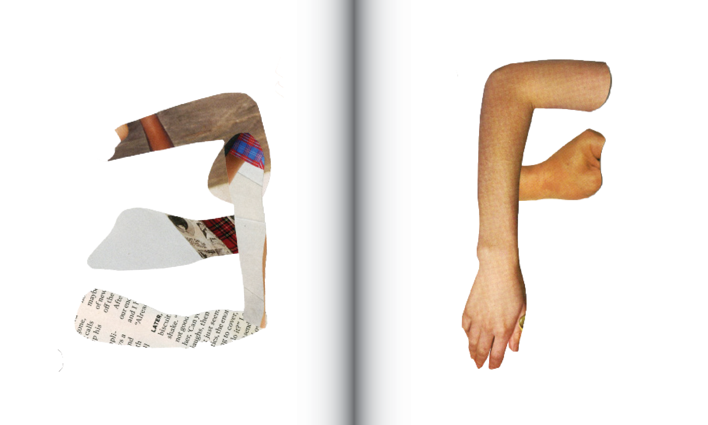
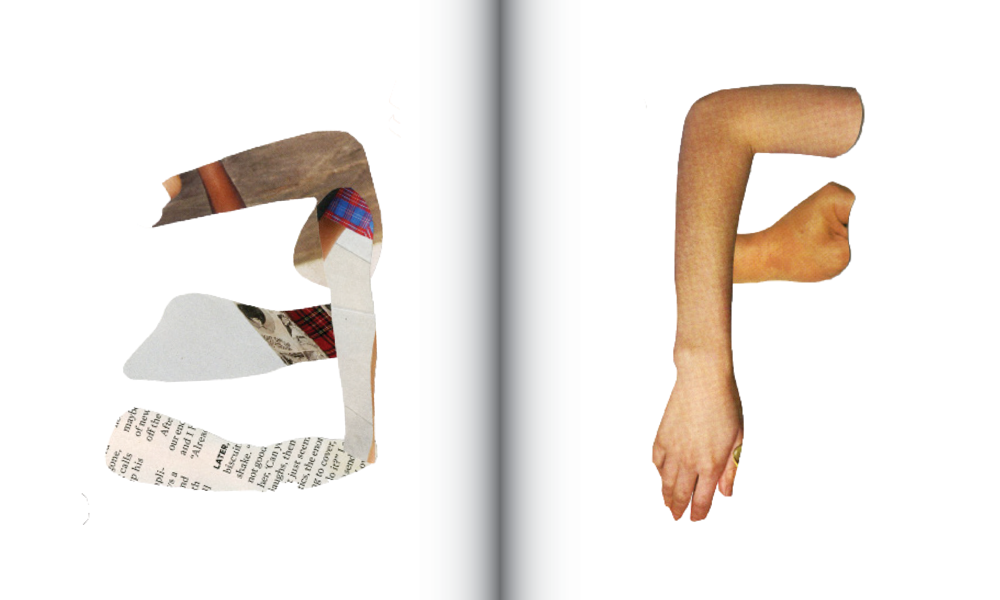
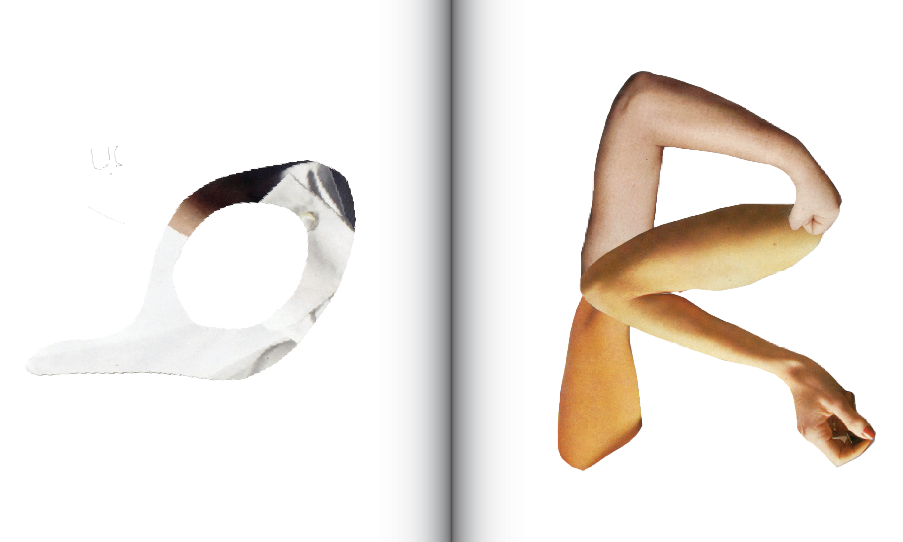
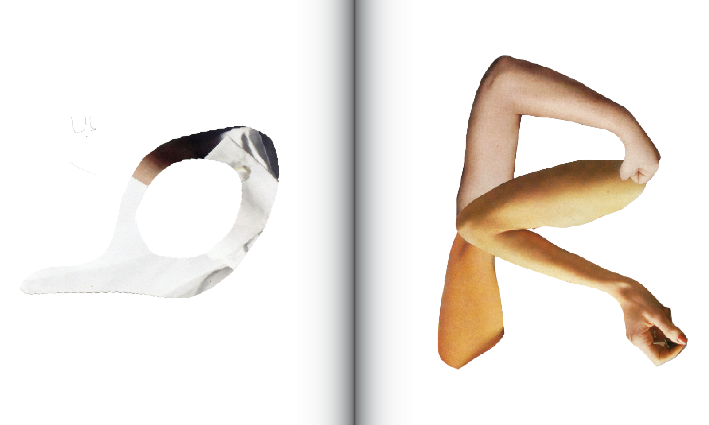
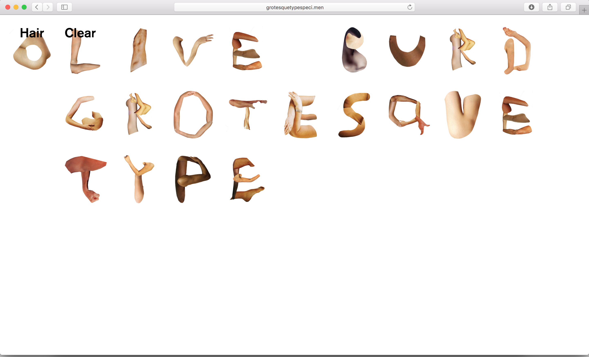
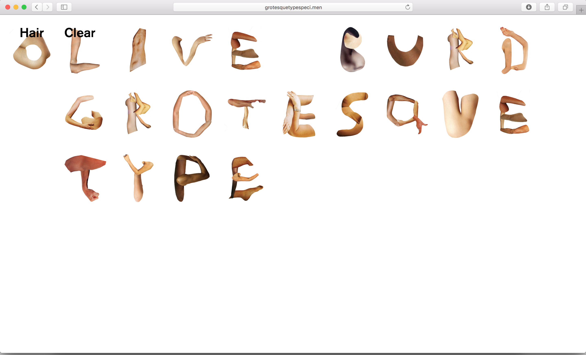

 



 





275 page 10" x 12" book; interactive website, 2018
Grotesque: comically or repulsively ugly or distorted; malformed, deformed, misshapen, disproportioned, distorted, twisted, gnarled, mangled, mutilated; a family of 19th-century sans serif typefaces. Through the exploration of experimental typography and the labor of making by hand, Olive identified the literary trope of the grotesque body. Olive began to explore design without the use of a computer, thinking of ‘Frankenstein’ as a verb Grotesque Type is a family of collaged typefaces dealing with gender, radical feminism, and the exquisite corpse-like nature of the woman’s body. Olive is especially interested in conveying radical and political concepts through this medium, with an integrity that cannot be communicated through contemporary digital design.